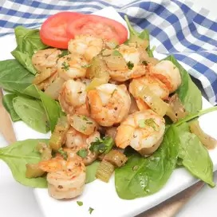

Sauteed shrimp

Description
These sauteed shrimp are great over grits or white rice. Adapted from Marge Jonte Mahoney, Greeleyville, SC.
Ingredients
- 1 lemon
- 3 pounds uncooked medium shrimp, peeled and deveined
- 1 tablespoon olive oil
- 1 small onion, chopped
- 2 ribs celery, chopped
- 2 cloves garlic, crushed and chopped
- salt and ground black pepper to taste
- 1 sprig fresh rosemary, chopped, or to taste
- ¼ teaspoon dried basil
- ¼ teaspoon dried oregano
- ¼ teaspoon ground coriander
- 1 bay leaf
- ¾ cup white wine, or to taste
- 1 teaspoon Worcestershire sauce, or to taste
Steps
- Squeeze lemon over shrimp and set aside.
- Heat olive oil over medium heat. Add onion, celery, and garlic. Season with salt and pepper and cook until tender, about 5 minutes. Stir in rosemary, basil, oregano, coriander, and bay leaf. Add white wine and Worcestershire sauce; cook until sauce is slightly reduced and flavors come together, 8 to 10 minutes.
- Add shrimp to the sauce and cook until pink, 5 to 7 minutes more.
Return to homepage